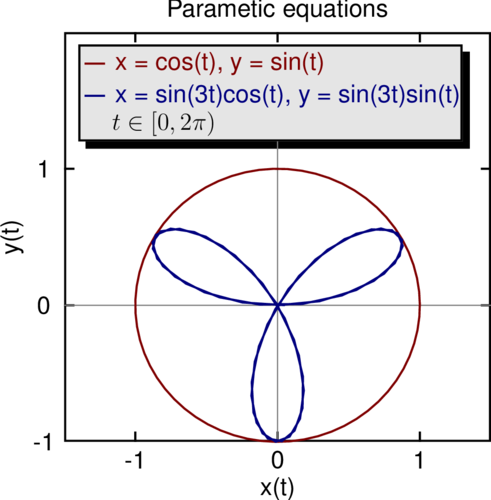

#
# Parametric curve generation, box with shadow, Helvetica font
#
default {
plot {
arrow {
line solid, gray, width=0.5
head hide
}
}
}
font_family sffamily
rgb litegray, '0.9 0.9 0.9'
plot {
title 'Parametic equations'
xaxis {
title 'x(t)'
min -1.5
max 1.5
ticks {
min -1
max 1
number 3
}
}
yaxis {
title 'y(t)'
min -1
max 2
ticks {
min -1
max 1
number 3
}
}
curve {
generate_t 'cos(t)', 'sin(t)', 0, 6.28, 0.1
line solid, red
symbol none
title 'x = cos(t), y = sin(t)', red
}
curve {
generate_t 'sin(3*t)*cos(t)', 'sin(3*t)*sin(t)', 0, 6.28, 0.1
line solid, blue
symbol none
title 'x = sin(3t)cos(t), y = sin(3t)sin(t)', blue
}
arrow {
from -1.5, 0
to 1.5, 0
}
arrow {
from 0, -1.5
to 0, 1.2
}
label '$t \in [0, 2\pi)$', -0.8, 1.33
box {
ll -1.4, 1.2
ur 1.3, 1.91
bgcolor litegray
}
}